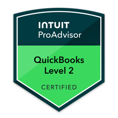
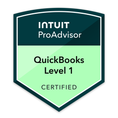

Ongoing CFO leadership for growth-stage companies, and the lenders and investors who rely on their numbers.
Charleston, SC · Serving clients across the Southeast
ContactWhat we do
Senior financial leadership, not bookkeeping.
We work with owner-led and investor-backed companies over the long term, as their CFO without the full-time hire. Most engagements run for years, not months. The work centers on one integrated view of the business, so decisions rest on numbers that hold up to scrutiny.
-
Financial planning and analysis.
Integrated three-statement models and driver-based forecasts that tie operating decisions to cash, margin, and capital needs.
-
Cash, capital, and runway.
13-week cash flow, working-capital discipline, and runway planning, so it is clear which commitments the business can carry.
-
Finance function build-out.
Close process, internal controls, KPI and board reporting, and cleanup of the underlying books where it is needed.
-
Lender, investor, and diligence readiness.
Reporting packages, data rooms, covenant tracking, and support through quality-of-earnings review.
Also available: transaction and capital-raise support, including financial modeling, diligence preparation, and lender and investor materials.
How we work
A staged engagement, built to last.
Every relationship starts the same way:
-
Clarity Call.
A 60-minute working session on the current financial position and the decisions ahead.
-
Clarity Snapshot.
A concise executive summary of what is solid, where visibility is limited, and what to address first.
-
CFO Partnership.
If there is a fit, an ongoing engagement that scales from monthly strategic sessions to integrated financial leadership.
Controls and accountability.
Client data stays in client systems. Changes are logged and attributable, and the CFO is accountable for the numbers delivered. Duties are separated wherever the client's team allows.
Confidentiality.
Engagements run under confidentiality terms, and nondisclosure agreements are signed as a matter of course. Sensitive information, including in healthcare engagements, is accessed only as the work requires.
Technology and review.
We use every tool available, including deep expertise in AI, to deliver faster and more accurately, and every output is reviewed by the CFO before it reaches a client, lender, or investor.
Leadership
Tom Schipper, Founder and Fractional CFO
Tom has more than 20 years in FP&A, controllership, and CFO roles across SaaS, healthcare, manufacturing, telecom, and global operations. He was Americas Controller at BT Global Services, held planning roles at PepsiCo, and served as senior controller at Volvo Cars' Charleston plant during its ramp-up. He also co-founded a SaaS business intelligence company, where he served as CFO, built its finance function, and helped raise its early funding.
Since founding Strategic Finance, Tom has served as an ongoing financial partner to founder-led and growth-stage companies: building finance functions, strengthening reporting, and preparing them for lenders and investors. He mentors founders at the Harbor Entrepreneur Center in Mount Pleasant.
- MBA in Finance and Operations, Texas A&M University (Mays Business School)
- Post-graduate certificate in AI and Machine Learning, University of Texas (McCombs)
- Tom Schipper, Certified QuickBooks ProAdvisor, Gold tier


Firm facts
- Entity
- Strategic Finance LLC
- Organization
- South Carolina limited liability company
- Established
- 2021
- Location
- Charleston, SC
Contact
Start with a conversation.
For engagements, lender or investor inquiries, or diligence requests:
- Emailtom@strategicfinance.llc
- Phone843-886-1705